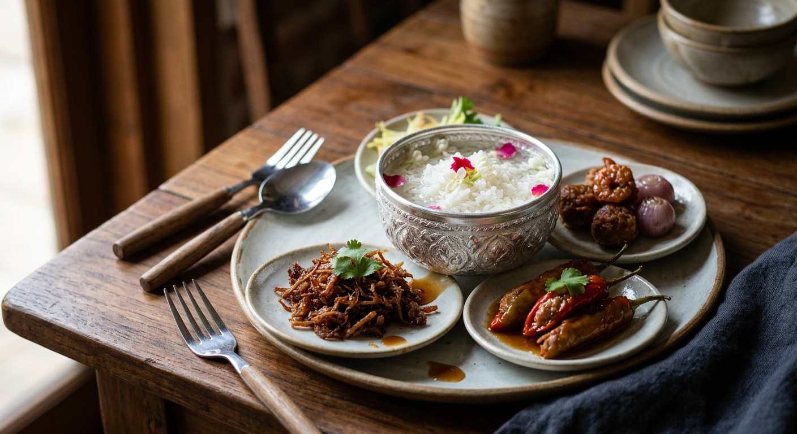

Parboiled jasmine rice chilled in candle-smoked flower water, eaten with a ring of tiny side dishes — shrimp-paste fritters, stuffed peppers, sweet fried turnip — the court's answer to April heat.

ข้าวแช่ means rice soaked in water, and the name understates the dish. The rice is parboiled, steamed, cooled and scented with jasmine; the water is flower-floated and candle-smoked for up to two nights; and around the bowl sits a court of side dishes, each one sweet-savoury, each one a small project of its own.
Every Thai source traces the dish to the Mon people, who called it เปิงด้าจก์ — rice water — and cooked it at Songkran as an offering to the gods and to their elders, a food considered pure and cooling. The palace kitchens refined it into the elaborate set-piece TrueID's recipe describes: luuk kapi fritters that keep for weeks, shallots stuffed with the same paste, sweet peppers stuffed with pork and covered in a lattice of fried egg, sweet fried turnip, and carved vegetables — krachai shaped like champak blossom, chillies like cucumber, sour mango like leaves.
It remains a hot-season dish. Sriwangying notes it is eaten only around Songkran in the Mon communities of Ratchaburi and Pathum Thani, and the restaurants that sell it in Bangkok open their khao chae seasons in April and close them by May.
| Thai | English | Amount |
|---|---|---|
| ข้าวสวย | Steamed jasmine rice | 2 cups |
| น้ำลอยดอกมะลิอบควันเทียน | Jasmine water, candle-smoked | 8 cups |
| ดอกมะลิ | Jasmine flowers, for scenting | a handful |
| กะปิ | Shrimp paste | 40 g |
| ปลาดุกย่าง | Grilled catfish, flesh only | 1 fish |
| ตะไคร้ | Lemongrass, sliced | 20 g |
| กระชาย | Fingerroot | 30 g |
| หอมแดง | Shallots, sliced | 100 g |
| น้ำตาลมะพร้าว | Coconut sugar | 150 g |
| แป้งข้าวเหนียว | Glutinous rice flour | 5 tbsp |
| ไข่เป็ด | Duck egg | 1 |
| น้ำปูนใส | Lime water | 3 tbsp |
| พริกหยวก | Sweet peppers | 10 |
| หมูสับ / เนื้อกุ้ง | Minced pork / prawn meat | 200 g / 200 g |
| หัวไชโป๊ | Salted turnip, shredded | 200 g |
| กระเทียม | Garlic, crushed | 3 tbsp |
The Wongnai pot: the same core — 2 cups rice, 1 litre jasmine water, peppers stuffed with pork and prawn, luuk kapi with grilled catfish, sweet fried turnip — and it adds the practical touch that a little water in the pan stops the palm sugar seizing. The Krua.co pot (Sangdad): aged jasmine rice soaked overnight in diluted alum for clear grains, then parboiled, rubbed free of its starch coat, steamed and sprinkled with jasmine water. The Mon pot (Sriwangying): no fixed list at all — sweet fried fish, sweet fried pork, coconut-milk turnip, fried noodles, mango and jackfruit salads, and watermelon on the side.
The rice treatment. Kapook and Wongnai simply steam the rice. Krua.co's Sangdad recipe soaks it overnight in diluted alum, parboils it, rubs the soft outer starch off under running water, then steams — the rice comes out glassy, with every grain separate. Both camps agree on the frog's-eye test: stop the boil while the grain is still firm at the centre.
The scenting method. Kapook and TrueID smoke the water with a candle floated on the surface. Sriwangying reports Mon households where no candle is used — flowers are simply floated, and the fragrance does the work. TrueID adds flowers Kapook doesn't: Mon rose and chommanard, with the scent of ylang-ylang as the court standard.
How many side dishes. TrueID's teacher counts the palace set — fritters, stuffed shallots, stuffed peppers under egg lattice, sweet turnip, sometimes shredded sour mango. Wongnai's home set is three dishes and openly says add sweet pork floss (หมูฝอย) if you like. The Mon original, per Sriwangying, has no fixed list at all: whatever the river and the garden give that week.
The fritter binder. Kapook rolls the luuk kapi in glutinous rice flour and duck egg; Wongnai uses plain rice flour and duck egg; both add lime water (น้ำปูนใส) to the mix. The paste itself differs too — Kapook allows either grilled catfish or gourami flesh, Wongnai specifies catfish.
The water itself. TrueID's recipe begins with rainwater, or tap water left out overnight to lose its chlorine — no ice if you can manage a clay pot, which cools the water on its own. Kapook doesn't fuss over the source; it wants the candle smoke. Modern sources quietly allow ice.
This recipe is translated from the following Thai-language sources. Where they disagree, we've said so.
1. Kapook Cooking — "แจกสูตร ข้าวแช่ชาววัง เมนูโบราณคลายร้อน" (the recipe used here: rice, scented water, luuk kapi, stuffed shallots) — cooking.kapook.com
2. Wongnai — "แจกสูตรฟรี ข้าวแช่ เมนูอาหารไทยโบราณคลายร้อน" (the home set of three side dishes; the turnip and stuffed-pepper method) — wongnai.com
3. TrueID Food — "เมนูคลายร้อน! สูตรข้าวแช่ ฉบับชาววัง" (the palace set, candle-smoked water and carved vegetables; recipe credited to ผศ.สมคิด ชมสุข) — food.trueid.net
4. Krua.co — "ข้าวแช่" by สำนักพิมพ์แสงแดด (the alum-soak and frog's-eye rice method) — krua.co
5. ศรีวังหญิง — "ข้าวแช่ชาววังคืออะไร? ย้อนรอยประวัติและวิธีรับประทาน" (Mon origins, Songkran practice, the Mon side-dish list) — sriwangying.com